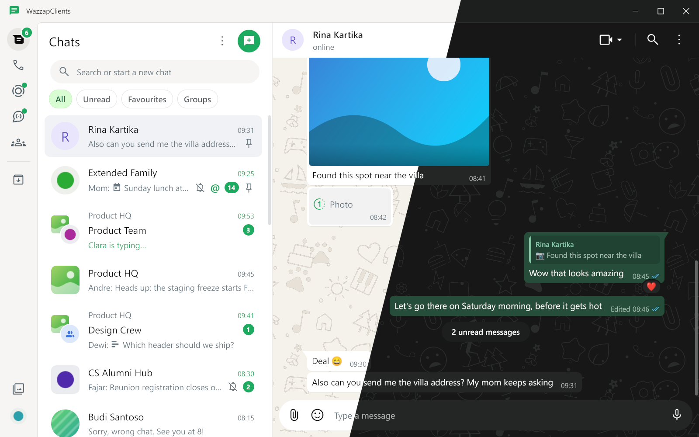
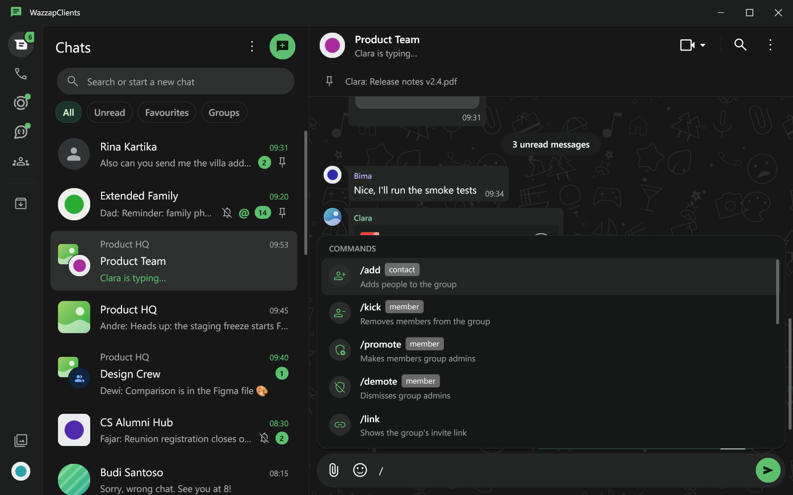
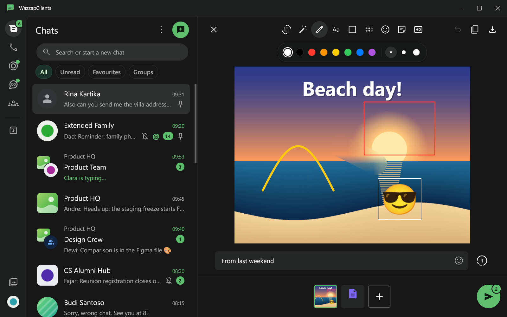
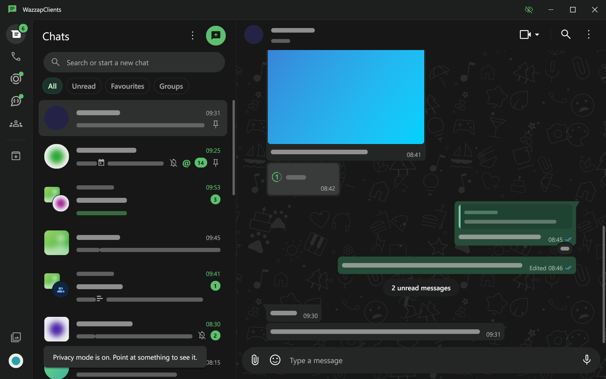

Open source · Windows & Linux
WhatsApp Desktop,
tanpa browser di dalamnya.
Aplikasi WhatsApp desktop native: tampil dan terasa seperti aplikasi resmi, tapi hanya sebagian kecil memorinya. Tanpa WebView, tanpa Electron.
Versi terbaru: …

Fitur
Kenapa WhatsUp Clients?
Ringan & native
Satu file binary. Cache dibatasi ukuran, memori dikembalikan ke OS saat idle. Tutup jendela, koneksi tetap jalan dari tray.
Familiar
Layout, ukuran, dan warna diukur dari screenshot aplikasi resmi. Chat, grup, polling, status, channel, dan communities — semua ada.
Slash commands
Ketik / seperti Discord: kelola grup, /schedule kirim nanti, /afk balas otomatis, /calc, snippet tersimpan, dan lainnya.
Privacy mode
Layar bisa dilihat orang? Nama dan pesan jadi bar, gambar blur sampai ditunjuk. Plus ghost mode, edit history, dan pesan terjadwal.
Notifikasi & multi-akun
Notifikasi sistem (Reply dan Mark as read di Windows), beberapa akun tertaut, draft per chat, @mention, dan formatting.
Update otomatis
Aplikasi memeriksa rilis baru sendiri dan menawarkan Update now atau Later. Setiap rilis bertanda tangan dan terverifikasi.



Rilis
Yang baru di versi terbaru
Memuat catatan rilis…
Unduh
Download
Selalu versi terbaru. Link di bawah mengikuti rilis paling baru secara otomatis.
Windows
WhatsUpClients-Setup.exe
Installer per user, tanpa perlu admin. Windows 10/11 x64.
Download installerWindows portable
WhatsUpClients-windows-amd64.exe
Tanpa installer. Taruh di folder milikmu, jalankan langsung.
Download portableLinux
WhatsUpClients-linux-amd64
Executable Linux x64. Butuh lingkungan desktop + runtime library Gio (X11/Wayland).
Download LinuxDukung
Suka aplikasinya?
WhatsUp Clients gratis dan open source (MIT). Traktir secangkir kopi agar pengembangannya jalan terus.